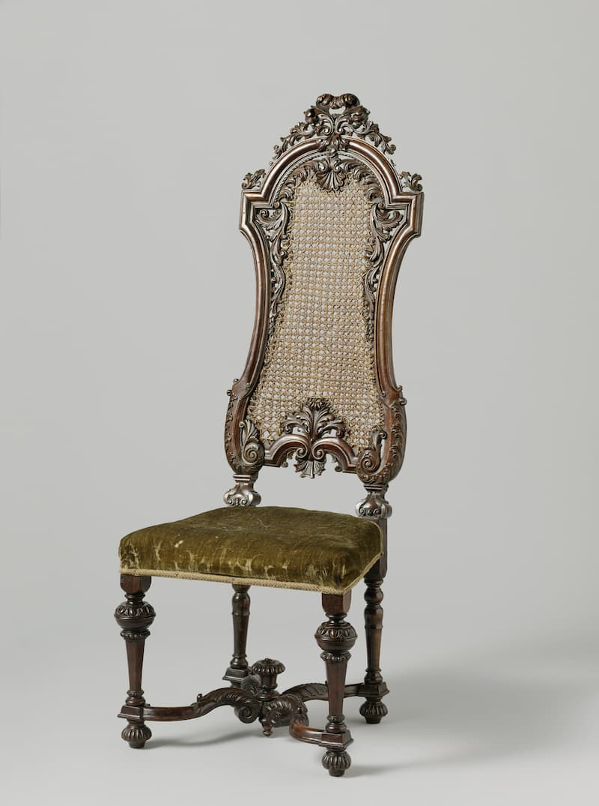
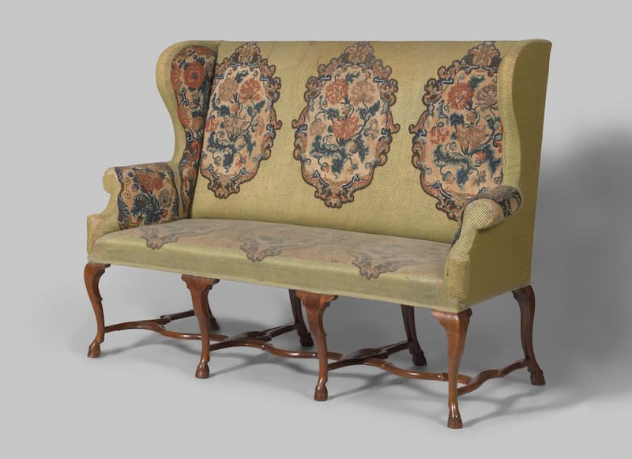

Bekijk alles
Hier zie je alle unieke meubels van deze site, veel kijkplezier!
Stoel

Deze stoel van notenhout heeft een zitting bekleed met een
bloemetjesstof in bronskleur, een rieten rug en poten in balustervorm
met bolle voetjes. De hoge rug zit vol versieringen: acanthusbladeren,
schelpjes en krulmotieven, en bovenop prijkt een acanthusblad als
kroontje.
Bron: Naar een beschrijving van Rijksmuseum, Public Domain.
Canapé bekleed met petitpoint

Deze canapé van notenhout staat op acht S-vormige bokspoten die met
een golvend kruisstuk aan elkaar vastzitten. De zitting, rugleuning en
armleuningen zijn bekleed met petit-point borduurwerk: groene en
geelgroene ruitjes, met crèmekleurige vakjes waarin rode en roze
papavers te zien zijn.
Bron: Naar een beschrijving van Rijksmuseum, Public Domain.
Lamp

Staande lamp op een ronde voet met profieltjes. De stam is
balustervormig en geprofileerd. Hij heeft een stenen kap. Gemerkt:
H.J. Bing en een zwaard.
Bron: Naar een beschrijving van Rijksmuseum, Public Domain.
Kaarsenkroon

Twee engeltjes zitten op een bol, eentje blaast op een bazuin. Onder
de bol zit schroefdraad om ze aan de onderste armenring vast te maken.
Het bazuinengeltje heeft drie driehoekjes, het andere geen markering
en is mogelijk later toegevoegd. De overige vier engeltjes ontbreken.
Bron: Naar een beschrijving van Rijksmuseum, Public Domain.